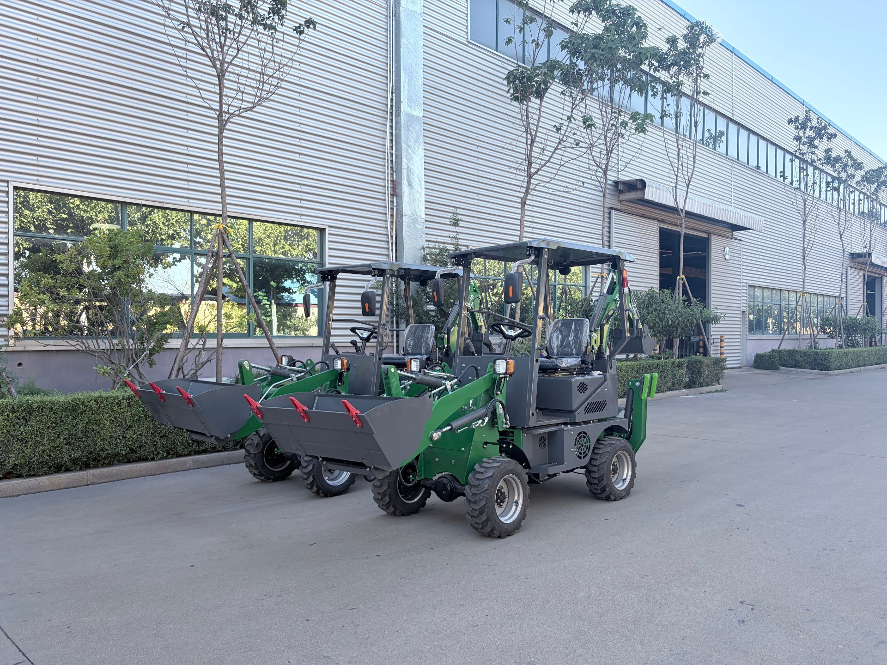
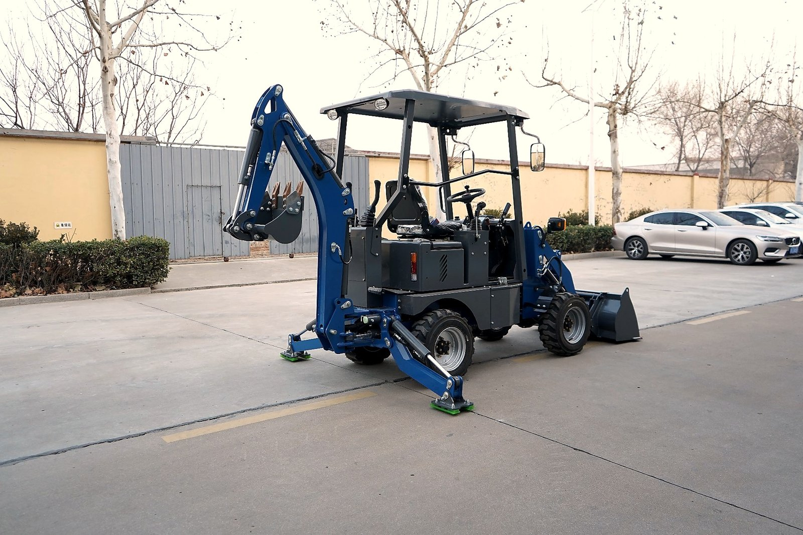
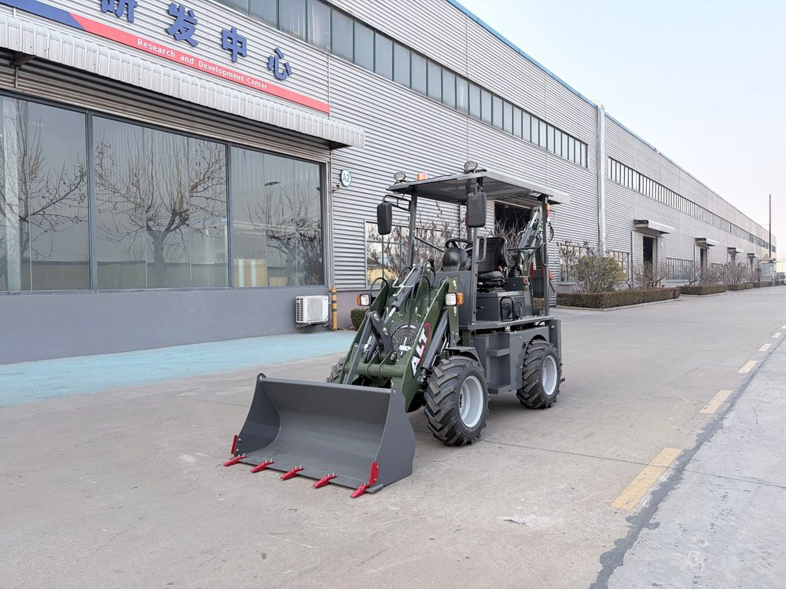

Three months ago, a client in Kenya sent me a short message: "Vivian, I grow maize and keep dairy cattle on 12 hectares. Every rainy season I hire a digger crew to open drainage ditches. Every dry season I hire them again to clear irrigation channels. I'm tired of paying for machines that show up late and leave too soon. What do I need to own one myself?"
My answer: a mini backhoe loader.
I see these machines every day on our assembly line at AOLITE Heavy Industry. Most people think of backhoe loaders as construction equipment, but on farms — especially small and medium farms — the mini models are quietly becoming the most useful machine in the yard. They dig, they load, they trench, and they move material. All day. All year.
This guide is everything I tell farm buyers before they place an order. It is honest. It includes what a mini cannot do. And it will help you decide whether the diesel workhorse or the electric indoor model is right for your land.

Why Farms and Mini Backhoe Loaders Are a Perfect Match
There are two classic farm equipment headaches: hiring and separate machines.
Hiring a backhoe or excavator crew for every drainage or trenching job means waiting for availability, paying daily rates, and watching the operator leave when the clock runs out — often with the job half-finished. Owning your own machine eliminates that uncertainty.
But full-size backhoe loaders are too wide for narrow farm roads, too heavy for soft ground, and too expensive to justify for intermittent work. A mini backhoe loader bridges the gap. At under 2,500 kg, it fits where a full-size machine cannot. It can be towed on a small trailer by a standard pickup. And it costs less to buy, ship, and run.
The other headache is separate machines. A farm might own a small tractor for pulling and a hired excavator for digging. A mini backhoe loader replaces both functions in one chassis. Front loader bucket for moving soil, feed, and gravel. Rear backhoe arm for trenches, post holes, and pond cleaning. One operator. One fuel tank. One maintenance schedule.
8 Farm Jobs a Mini Backhoe Loader Does Best
I have shipped mini backhoe loaders to farms across East Africa, Southeast Asia, and South America. Here are the jobs owners tell me they use them for most often:
1. Irrigation and Drainage Trenches
Opening channels for drip irrigation, clearing drainage ditches after heavy rain, and repairing washed-out field edges. The BL 20-07 digs to 1,850 mm, which covers most small-farm irrigation needs. For very shallow surface channels, the bucket alone works without engaging the backhoe.
2. Fence Post Holes
Agricultural fencing — whether for cattle, crops, or property boundaries — requires hundreds of post holes. With an auger drilling attachment, a mini backhoe loader drills clean, consistent holes far faster than manual digging. Even using the backhoe bucket alone, you can dig post holes to 1.5 meters in normal soil.
3. Farm Road and Path Maintenance
Filling potholes with gravel, grading dirt tracks between fields, and clearing mud after the rainy season. The front loader bucket is the right tool for spreading and leveling material on narrow internal roads.
4. Feed and Soil Movement
Moving compost, mulch, animal feed, and harvested produce. A mini backhoe loader with a 4-in-1 bucket can grab, scoop, and dump material in tight barns and storage areas where a wheel loader cannot turn.
5. Septic Tank and Biogas Pit Installation
Small-scale biogas digesters and household septic systems require precise trenching and pit excavation. A mini backhoe loader gives the farmer control over depth and slope without bringing in outside equipment.
6. Pond and Reservoir Cleaning
Silt removal from farm ponds and small water reservoirs. The backhoe arm reaches into the pond edge and pulls out accumulated mud, while the loader bucket transports the silt to a drying area.
7. Land Clearing and Stump Removal
Removing small trees, brush, and stumps from new plots. With a grapple or clamp attachment, the backhoe arm grips and pulls stumps that would take days to remove by hand.
8. Barn and Indoor Work
For poultry houses, dairy barns, and covered storage facilities, the near-silent BL 15-06 electric mini works without stressing animals or requiring ventilation for exhaust fumes. Zero emissions also mean no soot buildup on walls and feed storage.

Diesel or Electric: Which Mini Backhoe Loader Fits Your Farm?
This is the first question I ask every farm client. Here is how I break it down based on what I see on our production floor:
| BL 20-07 (Diesel) | BL 15-06 (Electric) | |
|---|---|---|
| Power | 25 kW (CHANGCHAI 390) | 7.5 kW |
| Operating weight | 2,350 kg | 1,200 kg |
| Dig depth | 1,850 mm | 1,200 mm |
| Fuel / energy | Diesel — widely available on farms | Battery — needs charging point |
| Noise level | Standard diesel | Near silent |
| Emissions | Tier 4 equivalent (swappable) | Zero |
| Best farm use | Open fields, drainage, loading, roads | Barns, poultry, indoor, eco sites |
For 90 percent of farms I work with, the diesel BL 20-07 is the right choice. Diesel fuel is already on the property, mechanics understand the engine, and there is no charging infrastructure to build. The electric BL 15-06 makes sense only if your work is inside buildings, next to livestock, or on a site with strict emissions rules.
One more practical note: if your country has specific emission standards, the CHANGCHAI 390 engine in the BL 20-07 can be swapped to meet your local regulations before shipping. I handle this on the factory floor based on the destination country's requirements.
Attachments That Turn It Into a Year-Round Farm Machine
A backhoe loader is only as useful as the attachments you pair with it. For farm work, I recommend buyers consider at least these three categories from our attachments catalog:
- Narrow trenching bucket: Ideal for irrigation channels and drainage ditches. A narrow bucket cuts faster and cleaner in soft soil than the standard width.
- Auger (drilling attachment): Cuts post holes and planting holes to consistent depth. For fencing, tree planting, and signpost installation, this saves hours per job.
- Grapple / clamp: Turns the backhoe arm into a grabbing tool for land clearing, log handling, and stump removal. Especially useful when clearing new plots.
I also remind farm buyers to think about tires. Standard construction tires work on hard ground, but if your farm has muddy fields or soft clay, you may want wider agricultural-style tires for better flotation. I have written a separate guide on backhoe loader tire selection that covers this in detail.

Honest Limits: What Farm Work Needs a Bigger Machine
I never sell a mini backhoe loader by pretending it can do everything. Here are the farm jobs where you will need a larger model:
- Deep canal excavation below 2 meters: The BL 20-07 reaches 1,850 mm. For deeper irrigation canals or large reservoir digging, step up to the BL 45-18 or a larger machine.
- High-volume gravel and rock loading: Loading 10-ton trucks with dense material all day requires a bigger bucket and more breakout force than a mini can provide.
- Large-scale land leveling: Converting multiple hectares from uneven to flat for mechanized planting is better handled by a dedicated motor grader or larger loader.
- Heavy clay or rocky soil: If your land is mostly compacted clay or solid rock, the mini will work slowly. A larger machine with more hydraulic power is the smarter investment.
My rule of thumb for farm buyers: If 70 percent of your earthmoving tasks are trenches, post holes, material handling, and light clearing — and the remaining 30 percent can be handled by hiring a larger machine once or twice a year — a mini backhoe loader will pay for itself faster than any other equipment on your farm.
Shipping to Farm Regions: Why Size Matters
Most farm buyers I work with are not next to a major port. They are in landlocked regions or rural districts where inland transport adds cost to every shipment.
Mini backhoe loaders solve this. The BL 15-06 fits in a standard 20-foot container with no disassembly. The BL 20-07 can be containerized with minimal preparation — removing the bucket and backhoe arm takes under an hour in our workshop, and reassembly at your farm is straightforward. Compare that to a 7-ton full-size machine that requires a flat rack or special heavy-lift booking, and the shipping savings alone can be significant.
For buyers in countries like Uganda, Mali, Bolivia, or Laos, where inland trucking from port to farm is a major expense, a containerized mini machine is often the difference between an affordable purchase and a project that never happens.
If you want to understand the full import process — customs, documentation, and inland logistics — I wrote a detailed guide on importing machinery from China based on what I have learned shipping to over 20 countries.
My Pre-Order Checklist for Farm Buyers
Before I prepare a quote, I walk every farm buyer through the same short checklist. These five questions prevent surprises after the machine arrives:
- What is your farm's soil type? Sandy, loamy, clay, or rocky? This affects bucket choice and whether you need reinforced teeth.
- Do you have charging infrastructure? If you are considering the electric BL 15-06, confirm you have reliable grid or solar charging. If not, diesel is the safer choice.
- What emission standard does your country require? I can configure the BL 20-07 engine to meet your local regulations before the machine leaves the factory.
- Will you transport it on a trailer? Both the BL 15-06 and BL 20-07 can be moved on a small trailer behind a standard pickup or tractor. Confirm your tow vehicle capacity.
- What is your annual operating hour estimate? Light seasonal use (under 300 hours per year) means standard maintenance intervals are sufficient. Heavy daily use may benefit from a spare-parts kit shipped with the machine.
The Bottom Line
A mini backhoe loader is not a luxury for a farm. It is a replacement for repeated hire costs, multiple single-purpose machines, and the frustration of waiting for outside equipment.
If your work involves irrigation, drainage, fencing, feed handling, and light land clearing — and your job sites are tight, soft, or remote — a mini will outperform a bigger machine while costing less to own, ship, and operate.
The diesel BL 20-07 is the right starting point for most farms. The electric BL 15-06 is the right choice for indoor or eco-sensitive sites. And if you find you need deeper dig depth or heavier lifting after a few seasons, I can help you trade up to a larger model without losing your investment in attachments and know-how.
Tell me about your farm, your soil, and what you are digging. I will give you an honest recommendation — even if it means starting with a different machine.
Not sure which mini backhoe loader fits your farm?
Tell me about your land, your crops or livestock, and what jobs you need to handle. I will recommend the right model, attachments, and shipping plan — straight from the factory floor.
Ask me on WhatsApp